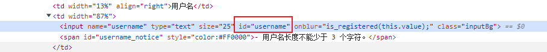

1.ID元素定位
id是标签的唯一属性，可以通过id属性来唯一定位一个元素
driver.find_element(By.ID, 'username')

2.name元素定位
也就是基于标签中的name属性来进行定位
driver.find_element(By.NAME, 'username')

3.class_name元素定位
基于html标签中的class属性来进行定位
driver.find_element(By.CLASS_NAME, 'inputBg')

4.tag name元素定位
基于html中的标签名来进行定位元素
driver.find_element(By.TAG_NAME, 'input')

5.css_selector元素定位
css是一种语言，他用来描述html和xml的元素显示样式，在css语言中有css选择器，同样的在我们的selenium中也可以使用这种选择器来定位元素
1）.基本选择器
- ID选择器，以#开始，然后接着id值
- 类选择器，以.开始
- 标签选择，以标签名
# 1）id选择器定位
driver.find_element(By.CSS_SELECTOR, '#username')
# 2）类选择器
driver.find_element(By.CSS_SELECTOR, '.inputBg')
# 3）标签选择器定位
driver.find_element(By.CSS_SELECTOR, 'input') # 查找第一个<input>标签
2）.属性选择器
driver.find_element(By.CSS_SELECTOR, '[type="text"]') # 单个属性定位
driver.find_element(By.CSS_SELECTOR, '[type="text"][id="username"]') # 多个属性定位
driver.find_element(By.CSS_SELECTOR, 'input[class="inputBg"]') # 标签名+属性选择器组合定位
driver.find_element(By.CSS_SELECTOR, 'input#username') # 通过标签名+ID选择器组合定位
driver.find_element(By.CSS_SELECTOR, 'input.inputBg') # 通过标签名+类选择器组合定位
driver.find_element(By.CSS_SELECTOR, 'table>tbody>tr') # 通过标签层级定位
driver.find_element(By.CSS_SELECTOR, 'table>tbody>tr:first-child td:nth-child(2) input[type="text"]') # 表格层级定位
3）.模糊定位
6.link_text定位
通过完整的链接文本来定位元素
driver.find_element(By.LINK_TEXT,'我已有账号，我要登录')

7.partial_link_text定位
通过超链接文本的部分内容来定位元素
driver.find_element(By.PARTIAL_LINK_TEXT, '我已有账号').click()

8.XPATH定位方式（*****）
8.1）绝对路径定位
语法：/html/body/div[6]/div/form/table/tr[0]/td[1]，/表示根节点
说明：使用“/”从根元素开始一级一级向下定位，路径中使用元素的标签名和索引，不建议使用
# 8.1）使用绝对路径定位
driver.find_element(By.XPATH, '/html/body//input[@name="username"]').send_keys('xpath定位')
8.2）相对路径定位
语法：//input[@name="username"]
说明：使用“//”从任意位置开始查找，[@attribute='value']用于筛选具有指定属性值的元素
# 8.2）使用相对路径定位
driver.find_element(By.XPATH, '//input[@name="username"]')
8.3）通过文本内容定位
语法：//*[text()="我已有账号，我要登录"]
说明：使用text()函数定位包含指定文本的元素
driver.find_element(By.XPATH, '//*[text()="我已有账号，我要登录"]').click()
8.4）通过部分文本内容定位，模糊匹配
语法：//*[contains(text(),"内容")]
说明：使用contains()函数定位包含部分文本内容的元素
driver.find_element(By.XPATH, '//*[contains(text(),"我已有账号")]').click()
8.5）通过元素属性定位
语法：[@attribute='value']
说明：使用[@attribute='value']来定位具有指定属性的元素
driver.find_element(By.XPATH, '//*[@name="username"]').send_keys('测试')
8.6）使用逻辑运算符
语法：//*[@name="username" and @id="username"]
说明：使用and or等逻辑运算符结合多个条件进行定位
driver.find_element(By.XPATH, '//*[@name="username" and @id="username"]').send_keys('测试')
8.7）使用函数
语法：//input[contains(@class,"inputBg")]
说明：使用xpath函数，比如说contains()、text()等对元素属性进行匹配
driver.find_element(By.XPATH, '//input[contains(@class,"inputBg")]').send_keys('测试')